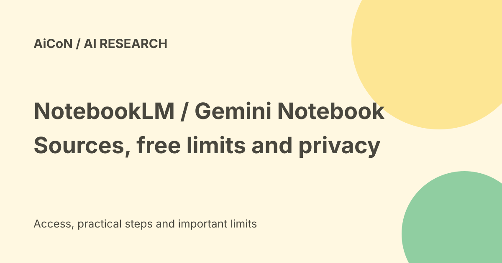

NotebookLM and Gemini Notebook: free limits, sources and privacy
NotebookLM helps you study material you add to a notebook. Current Google Help calls the product Gemini Notebook. Its Standard access is free, with daily limits; sources and citations help you check answers, but do not make every answer correct.

What it does and what the name means
A notebook is a collection of sources for one project. You can ask questions about those sources and turn them into study material, including reports, mind maps, flashcards, quizzes and Audio or Video Overviews.
The archived post used NotebookLM. Google's current product and plan Help pages use Gemini Notebook while remaining under the NotebookLM Help address. This guide preserves both names; it does not assume every account or app already shows the same label.
Current free Standard limits
| Notebooks | 100 per user. |
|---|---|
| Sources | 50 per notebook. |
| Chat | 50 queries per day. |
| Audio Overviews | 3 per day. |
| Video Overviews | 3 per day. |
| Reports, flashcards, quizzes and mind maps | 10 per day for each listed kind. |
| Deep Research | 10 per month. |
These are Google's current published caps, subject to change. Help says daily quotas reset after 24 hours and monthly quotas after 30 days. Do not assume a midnight reset. Some automatically created first-source artifacts do not count against limits.
Paid Plus, Pro and Ultra plans raise limits, but plan size and account type matter. Sharing a notebook does not raise a collaborator's source limit. This guide does not quote an unverified INR checkout price or ask you to buy a plan.
Sources you can add
Current desktop Help lists PDFs, Google Docs and Slides, web links, public YouTube videos, audio, copied text and other file types including Word, Markdown, CSV, PowerPoint and ePub. Google Sheets and images have their own limits. Mobile source-add options are narrower, so check the Help for your device.
The FAQ sets a limit of 500,000 words per source or 200MB for local uploads, with no page cap. Copy-protected PDFs and unsupported inputs may fail. Imported sources are not a promise that every diagram, image or file detail was understood.
Sources can be copies or auto-synced versions. Current Help says Google Drive imports auto-update every few minutes and update when you open the notebook; it also offers a manual sync control. Other imported material should not be assumed current. Check the source timestamp and keep only relevant sources selected.
A simple first notebook
- Use Google's official product entry and sign in to the intended account.
- Choose Create new notebook, then Upload a source or Add sources.
- Start with one public, non-sensitive PDF or page you understand.
- Ask a specific question, such as which passage explains a particular rule.
- Open the citation and compare the answer with the original source.
- Generate a short study guide or Audio Overview, then check its claims.
- Review sharing and remove material you no longer need.
No private sources were uploaded and no notebook was created for this guide. The steps come from current official Help, not a hands-on accuracy test.
India and account access
Google's supported-country list includes India. Its mobile Help also lists India for Android and iPhone/iPad, with gradual-rollout caveats. Browser eligibility follows the applicable age-of-consent rules; the FAQ asks users to verify their age. Work or school access can depend on an administrator and the account's license.
Do not treat a free personal account and a school or work account as having identical protections. Help distinguishes an additional service from qualifying core-service editions.
Privacy and feedback
For personal Standard use, Google says data is not used to train Gemini Notebook unless you provide feedback. Feedback may allow review of the full interaction, including queries, uploads and responses. Google also says it may process data for fraud, abuse and technical issues.
Qualifying Workspace or Education core-service accounts have different protections: uploaded files, chats and outputs are not reviewed by humans or used to improve generative AI models. Check the actual license rather than relying on an email address alone.
A shared notebook changes who can see material. Inspect the audience before sharing. An Audio Overview can repeat private source details, so treat generated media as sensitive when its source is sensitive.
Frequently asked questions
Is it free?
Google lists Standard sign-up free of charge, with limits.
Does a citation prove the answer?
No. Read the cited passage yourself.
Do all account types have the same privacy terms?
No. License and service category matter.
Can I rely on an overview for important decisions?
Use it to study, then verify the source and any current external rule.
What changed since the earlier post?
This guide adds current Gemini Notebook naming, more Standard caps, quota reset wording, desktop/mobile differences and the feedback exception to personal-account training protection. It removes the impression that source-grounded answers cannot be wrong.
Sources: Official product help · Current plans and limits · Create a notebook · Source imports · FAQ and file limits · Work and school accounts · Mobile access. Checked 8 October 2026.